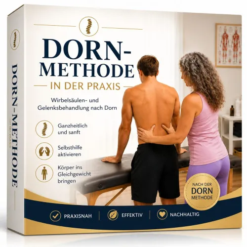
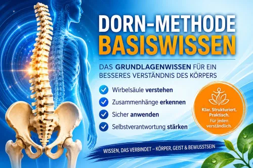
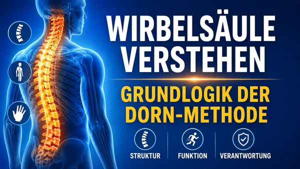

DBM - Dorn-Methode in der Praxis
Produktprofil · Marktplatz-Daten 2026-10-13 · Verkaufsseiten-Recherche 2026-10-13 · Kategorien: Health & Fitness, Personal Development, Education
- DBM - Dorn-Methode in der Praxis ist ein/e Mitgliederbereich & Videokurs in Health & Fitness und Personal Development, vertrieben über den Digistore24-Marktplatz von Anbieter dornbreuss, gelistet seit 2026-06-09.
- Listenpreis $18.61; Digistore24 meldet — Checkout-Konversion, — Stornierungsquote und 70 % Affiliate-Provision.
- Verdienst pro Verkauf (Affiliate): $13.03 (Anbieter-seitige Statistik, keine Prognose).
Interesse an DBM - Dorn-Methode in der Praxis? Aktueller Preis, Boni und Garantiebedingungen finden Sie auf der offiziellen Seite des Anbieters:
Offizielle Verkaufsseite ansehen
Affiliate-Link (Werbung) — wir verdienen ggf. eine Provision, ohne Mehrkosten für Sie.

Marktplatz-Daten
| Produkttyp | Mitgliederbereich & Videokurs |
|---|---|
| Preis | $18.61 (Single payment) |
| Affiliate-Provision | 70 % |
| Garantie/Rückgabe | Laut Verkaufsseite des Anbieters — vor dem Kauf auf der offiziellen Seite prüfen |
| Anbieter | dornbreuss (gelistet seit 2026-06-09) |
| Marktplatz-Statistiken* | Checkout-Konversion — · Stornoquote — · Verdienst/Verkauf $13.03 |
* Anbieter-seitige Statistiken von Digistore24; sie hängen von der Traffic-Qualität ab und sind keine Prognose.
Marktplatz-Beschreibung des Anbieters
Dorn-Methode in der Praxis – Mitgliederbereich & Video-Kurse Ein bekanntes Gesundheitsthema mit dauerhaftem Interesse Die Dorn-Methode zählt seit vielen Jahren zu den bekanntesten manuellen Methoden im deutschsprachigen Gesundheitsmarkt. Menschen interessieren sich zunehmend für funktionelle Zusammenhänge des Bewegungsapparates und suchen nach verständlichen Informationen rund um Wirbelsäule, Becken und Gelenke. Mit diesem digitalen Kurs erhalten Kunden Zugang zu einem strukturierten Mitgliederbereich mit Video-Kursen zur Dorn-Methode und zur Breuss-Massage. Der Kurs vermittelt die Grundlagen der Befundlogik, die funktionelle Betrachtung von Wirbelsäule und Becken, die Anwendungslogik der Dorn-Methode sowie die strukturierte Dokumentation im praktischen Kontext. Warum dieses Produkt für Affiliates interessant ist ✅ Bekanntes Thema mit hoher Marktakzeptanz ✅ Große Zielgruppe im Gesundheits- und Weiterbildungsmarkt ✅ Digitales Produkt mit Sofortzugang ✅ Mitgliederbereich mit professionell strukturierten Video-Kursen ✅ Verständlicher Aufbau und klarer Nutzen ✅ Geeignet für Content-Marketing, Newsletter, Social Media, YouTube und Gesundheitsportale ✅ Hohe Relevanz für gesundheitsbewusste Zielgruppen Zielgruppe Dieses Produkt richtet sich an: Gesundheitsinteressierte Menschen Anwender/innen der Dorn-Methode Masseure/innen Therapeuten/innen Heilpraktiker/innen Gesundheitsberater/innen Trainer/innen und Bewegungsfachpersonen Menschen mit Interesse an Körperarbeit und funktionellen Zusammenhängen Kursschwerpunkte Befundlogik Beobachtung im Dorn-Kontext Funktionelle Auffälligkeiten erkennen Zuordnung von Wirbel und Funktion Befundhypothesen entwickeln Anwendungslogik der Dorn-Methode Halswirbelsäule (HWS) Brustwirbelsäule (BWS) Lendenwirbelsäule (LWS) Beckenlogik und Beinlängendifferenz Integration von Becken und Wirbelsäule Breuss-Massage Zweck im Dorn-Kontext Strukturierter Ablauf Kombination mit der Dorn-Methode Dokumentation und Qualitätssicherung Fallaufnahme Behandlungsprotokoll Verlaufsdokumentation Fachliche Abgrenzung Qualitätssicherung Was Kunden besonders schätzen Der Kurs vermittelt die Dorn-Methode nicht als Sammlung einzelner Techniken, sondern als nachvollziehbares System. Teilnehmer lernen, Beobachtungen einzuordnen, funktionelle Zusammenhänge besser zu verstehen und die Anwendungslogik der Methode systematisch nachzuvollziehen. Dadurch entsteht ein klareres Verständnis der Dorn-Methode und ihrer fachlichen Struktur. Für Affiliates besonders interessant Die Themen: Dorn-Methode Breuss-Massage Wirbelsäule Rücken Becken Gelenke Körperbewusstsein Gesundheitswissen gehören seit Jahren zu den gefragten Bereichen im Gesundheitsmarkt und bieten zahlreiche Ansatzpunkte für Content-Marketing, Empfehlungen und zielgruppenorientierte Werbung. Bewirb ein hochwertiges digitales Fachprodukt in einem etablierten Gesundheitsmarkt und profitiere von einer gesundheitsbewussten und engagierten Zielgruppe.
Von der Verkaufsseite des Anbieters
Seitentitel: Home | dbm-dorn-breuss-die-praezise-loesung-von-claudia-gorbach
Abschnitts-Überschriften
- DBM Dorn-Breuss die präzise Lösung
Einstiegstext
Dieser Kurs zeigt, warum Technik allein keine Stabilität erzeugt – und weshalb Ordnung, Wahrnehmung und systemische Führung die eigentliche Voraussetzung wirksamer Anwendung sind.
Hinweis zur Zahlungsabwicklung Die Bestellung und Zahlung werden über Digistore24 als offiziellen Verkaufspartner abgewickelt. Digistore24 übernimmt die Zahlungsabwicklung, Rechnungsstellung und die Bereitstellung des Zugangs.
Recherche-Methode: rohes HTML · 102 Wörter · Qualität: thin · recherchiert am 2026-10-13. Vollständige Recherche-Datei (MD) ↗
Wie Produkte dieser Art geliefert werden
Allgemeiner Hinweis zu diesem Produkttyp (keine anbieterspezifische Anleitung): Videokurse laufen über einen Mitgliederbereich: nach dem Checkout erhalten Sie Zugangsdaten per E-Mail und können die Lektionen in Ihrem eigenen Tempo streamen. Für die genaue Anwendung von DBM - Dorn-Methode in der Praxis sind die offizielle Verkaufsseite und die enthaltenen Materialien maßgeblich.
Gut zu wissen
- Keine Garantie-Formulierung in unserer Recherche gefunden — bestätigen Sie das Rückgabefenster auf der offiziellen Seite, bevor Sie kaufen.
- Marktplatz-Zahlen (Preis, Provision, Konversion, Stornoquote) — Quelle: offizielle Digistore24-Marktplatz-API (Affiliate-Sicht), Stand 2026-10-13. Gegenprüfung: Marktplatz-Suche nach Produkt-ID 698552.
- Verkaufsseiten-Zitate — Quelle: https://academy.e-ducation.cloud/course/dbm-dorn-breuss-die-praezise-loesung-von-claudia-gorbach/, abgerufen 2026-10-13 (Methode: rohes HTML). Verify: offizielle Seite öffnen.
- Garantie / Rückgabe — vom Anbieter festgelegt; vor dem Kauf auf der Verkaufsseite bestätigen.
- Nicht von uns geprüft: Produktqualität, Ergebnisse, Testimonials — kein Praxistest für dieses Listing durchgeführt.
Häufige Fragen zu DBM - Dorn-Methode in der Praxis
Antworten aus dem Marktplatz-Snapshot (2026-10-13) und der Verkaufsseiten-Recherche (2026-10-13); Anbieteraussagen sind inline gekennzeichnet.
Was ist DBM - Dorn-Methode in der Praxis?
DBM - Dorn-Methode in der Praxis ist ein Angebot des Typs „Mitgliederbereich & Videokurs" im Digistore24-Marktplatz, Anbieter: dornbreuss, gelistet seit 2026-06-09. Eingepflegt unter Gesundheit & Fitness und Persönlichkeitsentwicklung. Digistore24 wickelt Checkout, Lieferung und Rückgaben ab.
Wie viel kostet DBM - Dorn-Methode in der Praxis?
Der Digistore24-Marktplatz listet es für $18.61 (single payment). Preise legt der Anbieter fest und können sich ändern — der Marktplatz-Eintrag oben zeigt den Schnappschuss; die offizielle Verkaufsseite zeigt den aktuellen Preis.
Gibt es eine Geld-zurück-Garantie für DBM - Dorn-Methode in der Praxis?
Unsere Verkaufsseiten-Recherche hat keine explizite Garantie-Formulierung gefunden. Viele Digistore24-Produkte bieten 60 Tage Geld-zurück, aber das legt jeder Anbieter selbst fest — bestätigen Sie es auf der offiziellen Verkaufsseite, bevor Sie kaufen.
Ist DBM - Dorn-Methode in der Praxis seriös?
Wir bewerten keine Seriosität — wir veröffentlichen überprüfbare Zahlen: Anbieter dornbreuss (gelistet seit 2026-06-09), Checkout-Konversion —, Stornoquote —, Affiliate-Verdienst/Verkauf $13.03 (alles Anbieter-seitige Marktplatz-Statistiken). Lesen Sie unsere 6-Punkte-Bewertungsmethode und entscheiden Sie anhand der Zahlen — oder diskutieren Sie DBM - Dorn-Methode in der Praxis auf GitHub.
Wo kann ich DBM - Dorn-Methode in der Praxis sicher kaufen?
Nur über die offizielle Verkaufsseite, die auf dieser Seite verlinkt ist (Checkout und Rückgaben laufen über Digistore24). Prüfen Sie dort Preis und Garantie vor der Bestellung. Der Link ist ein Affiliate-Link — der Kauf unterstützt diese Website ohne Mehrkosten für Sie.
Wie erhalte ich DBM - Dorn-Methode in der Praxis nach der Zahlung?
Der Checkout läuft über Digistore24: Nach der Zahlung erhalten Sie Ihren Zugang oder Download per E-Mail und in Ihrem Digistore24-Kundenkonto. Lieferdetails für diesen Produkttyp: Videokurse laufen über einen Mitgliederbereich: nach dem Checkout erhalten Sie Zugangsdaten per E-Mail und können die Lektionen in Ihrem eigenen Tempo streamen. Bei Problemen kann der Digistore24-Käufersupport Ihre Bestellung wiederherstellen.
Alle 50 Käuferfragen zu Gesundheit & Fitness — das komplette Kategorie-FAQ.
DBM - Dorn-Methode in der Praxis auf Reddit diskutieren
In Community-Threads vergleichen echte Käufer Erfahrungen. Wir verlinken Communities, keine einzelnen Posts — Threads verschwinden, Subreddits bleiben:
- r/FITNESS — deutschsprachige Community mit Diskussionen zu health & fitness.
- Reddit-Suche nach „DBM - Dorn-Methode in der Praxis" — Live-Ergebnisse, von uns nicht beeinflusst.
- Top-„Erfahrungs"-Treffer dieses Jahr — selbst nach Aktualität filtern.
Passendes auf Amazon.de
Physische Produkte und Zubehör, die häufig zusammen mit DBM - Dorn-Methode in der Praxis gekauft werden:
- Nahrungsergänzung auf Amazon.de — Top-Ergebnisse, Amazon-Ranking.
- Bestseller: Nahrungsergänzung — live Liste von Amazon, von uns nicht kuratiert.
Werbung: Als Amazon-Partner verdient DigistorePicks DE an qualifizierten Käufen (Partner-tag adminstorede-21). Amazon setzt eigene Preise und Provisionen (niedrige einstellige Prozente — weit unter den 30–75% der Digistore24-Anbieter). Amazon ist ein Convenience-Angebot für Sachprodukte, kein Ersatz für das digitale Produkt oben.
Ähnliche Angebote in Gesundheit & Fitness

Eine vollständig strukturierte, medizinisch fundierte Online-Ausbildung zur Vorbereitung auf die Heilpraktikerprüfung – mit klarem Curriculum, systematischem Au

Online Ausbildung zum Holistic Skin & Health Expert, staatlich Zugelassen mit Abschlusszertifikat ( 6 Monate) Werde zertifizierter Holistic Skin & Healt

1:1 Online Training per Video Mentale Klarheit auf Knopfdruck – mitten im echten Leben. Stell dir vor, du könntest deinen Fokus, deine Gelassenheit und deine Wa

bis zu 10% Provision | 600.000€ Umsatzpotenzial für 2026 Marktplatz-Beschreibung Sichern Sie sich Ihren Anteil am Erfolg: Wir suchen exklusive Partner für ein 6
Weitere Angebote von dornbreuss

Dorn-Methode Basiswissen Die Dorn-Methode gehört seit Jahrzehnten zu den bekanntesten Methoden im Bereich Wirbelsäule, Körperstatik und Selbsthilfe. Mit diesem
Selbstwahrnehmung und Beinlängen-Check nach Dorn Affiliate-Produktbeschreibung Viele Menschen beschäftigen sich mit Rückenbeschwerden, Beckenschiefstand oder de
DBM – Dorn-Breuss: Die präzise Lösung Der Minikurs für alle, die Dorn-Breuss wirklich verstehen wollen Viele Menschen lernen die Dorn-Breuss-Methode über Techni

Wirbelsäule verstehen – Grundlogik der Dorn-Methode Kostenloses Freebie mit systematischer Aufstiegslogik Dieses Freebie ist der Einstieg in die Dorn-Breuss Pro
DBM - Dorn-Methode in der Praxis ist auch gelistet in
Persönlichkeitsentwicklung (711 Produkte) · Bildung (597 Produkte)
Ähnliche Preislage in Gesundheit & Fitness
Der perfekte Einstieg ist immer ein Freebie Hier bieten wir Dir ein Freebie zum Thema Gesundheit & Wohlbefinden an. In diesem Freebie geht es um das leidige
Der ultimative Fitness-Guide 2025 ist ein All-in-One Paket für alle, die Muskeln aufbauen, Fett verbrennen und ihre Ernährung optimieren wollen.
Selbstwahrnehmung und Beinlängen-Check nach Dorn Affiliate-Produktbeschreibung Viele Menschen beschäftigen sich mit Rückenbeschwerden, Beckenschiefstand oder de
DBM – Dorn-Breuss: Die präzise Lösung Der Minikurs für alle, die Dorn-Breuss wirklich verstehen wollen Viele Menschen lernen die Dorn-Breuss-Methode über Techni
Ähnliche Suchanfragen
Wo Sie es sich ansehen können
Wo Sie es sich ansehen können
Aktuelle Preise, Garantie und Boni finden Sie auf der offiziellen Verkaufsseite:
Offizielle Verkaufsseite ansehen
Das ist ein Affiliate-Link (Werbung) — kaufen Sie darüber, verdienen wir ggf. eine Provision, ohne Mehrkosten für Sie.
Quellen & weiterführende Informationen
- Offizielle Verkaufsseite (aktueller Preis, Garantie, Boni): academy.e-ducation.cloud/course/dbm-dorn-breuss-die-praezise (Affiliate-Link)
- Öffentliche Digistore24-Produktseite: digistore24.com/product/698552
- Vollständige Recherche-Datei (Markdown, versioniert): content/products/56848-dbm-dorn-methode-in-der-praxis.md
- Affiliate-Supportseite des Anbieters: success.e-ducation.cloud/partner2-dbm-dorn-methode-in-der-pr
- Marktplatz-Kategorie: Gesundheit & Fitness
Wie wir Produkte wie DBM - Dorn-Methode in der Praxis bewerten
Sechs Prüfungen, ausschließlich mit offiziellen Marktplatz-Zahlen. Die vollständige Bewertungsmethode lesen · unsere Recherche-Standards & Kennzeichnung.
Fragen oder eigene Erfahrungen mit DBM - Dorn-Methode in der Praxis?
Praxis-Tests veröffentlichen wir erst, nachdem wir ein Produkt selbst gekauft haben — aber Ihre Erfahrung hilft anderen Lesern: Diskussion zu DBM - Dorn-Methode in der Praxis auf GitHub starten/verfolgen. Falsche Zahl gefunden? Korrektur melden — jede Seite zeigt ihre Datenstände, Korrekturen gelten für die ganze Website.